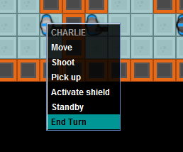
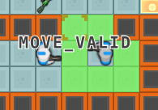

Quick start¶
TL;DR
Install a JDK (1.7 or newer) and start Launcher.jar
First, make sure you have Java 1.7+ (and optionally Python 3.5+ if you plan on making a Python AI) installed and added to your PATH. Check out our handy page on getting all that sorted here.
Running the Game with the sample AI¶
Everything you need is located inside the Cyber Team Zero folder in the dev kit.
- Extract the Cyber Team Zero folder.
- Double click the Launcher.jar file.
Note
If Java is not set up as the default handler for .jar files this may not work. You can alternatively use Launcher.bat or Launcher.sh
- Click the Start Button
Hint
For more information about any setting in the launcher, just hover your mouse over it to pop up the tool-tip.
Once you are able to run the game with the default AI player, you can start making changes to the source code located inside your development kit. The sample AI is located inside the Bots folder. You can keep your AI in any subdirectory of the Bots folder.
If you run into any problems, email challenge@orbis.com with any questions that you may have.
Playing the game yourself (No AI)¶
You can select the “Human” option in the launcher to play the game yourself, either against your AI, or against another person. In order to give commands to your units, you can simply right click them to open a context menu and select a command:
The game will then show all possible targets for the move. For example, if you select “Move”:
When you mouse over possible targets, the game will show the expected result of that move, with the name of the enum value you would get if you called .checkMove. The same applies to shooting, pick ups, and shields.
Once you have selected an action for each unit, you can click on any one of your units, and select “End Turn” to commit all actions for that team.
Note
The interface does not take the turn timeout into account, will give either side unlimited time to select moves.
Note
The human interface is for testing purposes only and is not as flushed out as the API.
Available Resources¶
The following pages in this documentation should be helpful to you with the Challenge:
- What is Cyber Team Zero? - Explains the overall game, and all the different things that can show up on the game map
- Configuring your IDE - How to configure an IDE to conveniently debug and develop your AI
- Grading Scheme - How the submissions will be judged
Documentation for the code provided in the dev kit can be found here: